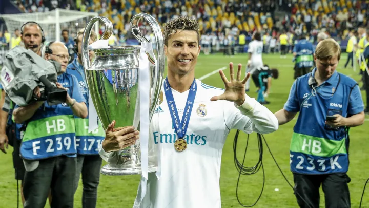

Sobre a CHAMPIONS
A Liga dos Campeões da UEFA(Champions) é uma competição anual de futebol em nível continental, organizada pela União das Associações Europeias de Futebol e disputada por clubes da Europa.
A final da Liga dos Campeões da UEFA é o evento esportivo anual mais visto em todo o mundo. A final da edição de 2012–13 teve o maior número de audiências até o momento, atraindo 360 milhões de telespectadores
